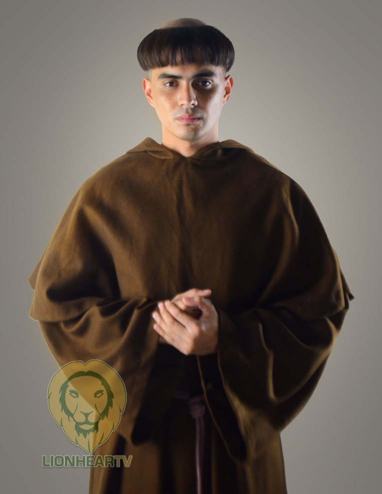

MEAL PLANNER
| NOLI ME TANGERE |
| Characters 2 | Description |
>

| Alperes | - The Alperes is a general and is the rival of Kura Salvi.
- He is a very powerful man of San Diego.
- He has a wife that would manipulate his decisions like a puppet.
|
 | Padre Sybila |
- Padre Sybila is a good padre in Noli Me Tangere.
- Unlike Padre Damaso, he actually has integrity for people and was nice to Cristostomo Ibarra.
- His symbol is like the good Padres that are in the church before.
|
 | Pilosopo Tasyo |
- Pilosopo Tasyo is a smart man even during a young age.
- He's a very philisophical person who has crazy ideas that even make people call him crazy.
- He's a good man and helps in Cristostomo Ibarra's journey
|
|  | Kura Salvi |
- Kura Salvi also known as Padre Salvi is like a very secretive version of Padre Damaso.
- He has a lot of evil secrets and commits a lot of corruption
- His symbol is similar to Padre Damaso.
|
references
Alperes no APA citation/
Wiki, C. T. M. C. a. I. (n.d.-e). Tiya Isabel. Maria Clara at Ibarra Wiki. https://mariaclaraatibarra.fandom.com/wiki/Tiya_Isabel
Wiki, C. T. M. C. a. I. (n.d.-d). Padre Sibyla. Maria Clara at Ibarra Wiki. https://mariaclaraatibarra.fandom.com/wiki/Padre_Sibyla/
Facebook. (n.d.). https://www.facebook.com/Padre-Damaso-375988452996313/photos/375990409662784/?paipv=0&eav=AfZvBDPOlpSCTroWu59aOZQtBSBkW6nMoXoVvOdRpOqyr_M8XsUSBq97GrgAr_TZphE&_rdr
Wiki, C. T. M. C. a. I. (n.d.-e). Pilosopo Tasio. Maria Clara at Ibarra Wiki. https://mariaclaraatibarra.fandom.com/wiki/Pilosopo_Tasio
Lauren. (2021). Air fried hot dogs. Low Carb Nomad. https://www.lowcarbnomad.com/air-fried-hot-dogs/
Lauren. (2021). Air fried hot dogs. Low Carb Nomad. https://www.lowcarbnomad.com/air-fried-hot-dogs/
Lauren. (2021). Air fried hot dogs. Low Carb Nomad. https://www.lowcarbnomad.com/air-fried-hot-dogs/
Lauren. (2021). Air fried hot dogs. Low Carb Nomad. https://www.lowcarbnomad.com/air-fried-hot-dogs/
Lauren. (2021). Air fried hot dogs. Low Carb Nomad. https://www.lowcarbnomad.com/air-fried-hot-dogs/
SORRY PO I REALLT DON'T KNOW WHY MY BACKROUND COLOR ISN'T WORKING